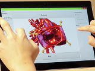
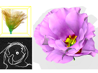
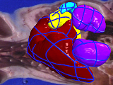
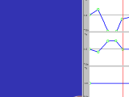
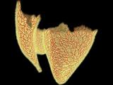
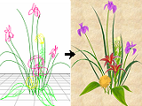

Information

井尻敬
講師,
メディアセンシング研究室, 立命館大学.
博士（情報理工学）
mail: takashi.ijiri80 AT gmail.com
講師,
メディアセンシング研究室, 立命館大学.
博士（情報理工学）
mail: takashi.ijiri80 AT gmail.com
resume(.pdf)
研究業績
講義
勉強メモ
github
facebook
Recent updates
2017/2 : 片岡さんのIPA未踏ソフトウエア創造事業プロジェクトの最終報告会があります.
2017/2 : 修士学生の論文がICASSP 2017に採録されました.
2017/2 : BRDF計測に関する論文がIEVC二採録されました (土橋先生、藤堂先生との共著です．).
2016/10: 学生の論文3本がAPSIPA 2016に採録されました.
Recent updates
2017/2 : 片岡さんのIPA未踏ソフトウエア創造事業プロジェクトの最終報告会があります.
2017/2 : 修士学生の論文がICASSP 2017に採録されました.
2017/2 : BRDF計測に関する論文がIEVC二採録されました (土橋先生、藤堂先生との共著です．).
2016/10: 学生の論文3本がAPSIPA 2016に採録されました.
研究テーマ等
コンピュータグラフィクス: 形状モデリング, テクスチャ生成, 物理シミュレーション
画像処理: 医療用画像処理, 3次元画像領域分割, スポーツ動画像処理
デジタルアーカイブ: 疾患臓器のモデリング, 花のモデリング, 昆虫のモデリング
趣味: クラシックギター, バドミントン, 野球, 映画, etc.
画像処理: 医療用画像処理, 3次元画像領域分割, スポーツ動画像処理
デジタルアーカイブ: 疾患臓器のモデリング, 花のモデリング, 昆虫のモデリング
趣味: クラシックギター, バドミントン, 野球, 映画, etc.
Short Bio.
| 2015/4 - | 現在 | 講師 , 立命館大学 情報理工学部 メディア情報学科. |
| 2015/4 - | 現在 | 客員研究員, 理化学研究所. |
| 2016/9 - | 現在 | 客員研究員, 国立循環器病研究センター (2014/9-2016/3にも兼務). |
| 2013/4 - | 2016/3 | 客員准教授 , 北海道大学工学院. |
| 2012/4 - | 2015/3 | 基礎科学特別研究員, 理化学研究所. |
| 2009/4 - | 2012/3 | 研究員 , 理化学研究所. |
| 2004/4 - | 2009/3 | 修士・博士 , 東京大学大学院情報理工学系研究科. (指導:五十嵐健夫教授). |
| 2000/4 - | 2004/3 | 学士 , 東京工業大学1類情報科学科, (指導:柴山悦哉教授). |
Selected Publication
 |
Modeling Plant Life in Computer Graphics
ACM SIGGRAPH 2016 courses [project page] [ACM DL] |
 |
CogKnife: Food Recognition From Their Cutting Sounds
CEA2016 [project page] |
|  |
Interactive Deformation of Structurally Complex Heart Models Constructed from Medical Images
Eurographics 2016 short paper. [project page] |
|  |
Flower Modeling via X-ray Computed Tomography
SIGGRAPH 2014 [project page] [CT volume Libraly] |
 |
Prediction of open urinary tract in laparoscopic partial nephrectomy by virtual resection plane visualization
BMC Urology 2014 [paper - Open access] |
|  |
Bilateral Hermite Radial Basis Functions for Contour-based Volume Segmentation
EUROGRAPHICS 2013. [project page] |
 |
A Kinematic Approach for Efficient and Robust Simulation of the Cardiac Beating Motion PLoS ONE, 2012. Project Page |
 |
Contour-based Interface for Refining Volume Segmentation Pacific Graphics 2010. Project Page |
|  | ProcDef: Local-to-global Deformation for Skeleton-free Character Animation Pacific Graphics 2009. Project Page |
 |
Lapped Solid Textures: Filling a Model with Anisotropic Textures SIGGRAPH 2008. Project Page |
| Surface-based Growth Simulation for Opening Flowers Graphics Interface 2008. Project Page |
|
 |
An Example-based Procedural System for Element Arrangement Eurographics 2008. Project Page |
|  | A procedural method for modeling the Purkinje fibers of the heart The Journal of Physiological Science 2008. Project Page |
 |
A Sketch-based Interface for Modeling Myocardial Fiber Orientation that Considers the Layered Structure of the Ventricles JPS 2008. Project Page |
 |
Light Shower: A Poor Man’s Light Stage Built with an Off-the-shelf Umbrella and Projector SIGGRAPH 2007, Sketches. Project Page |
|  | Seamless Integration of Initial Sketching and Subsequent Detail Editing in Flower Modeling Eurographics 2006. Project Page |
 |
Sketch L-System: Global Control of Tree Modeling Using Free-form Stroke SmartGraphics 2006. Project Page |
 |
Floral diagrams and inflorescences: Interactive flower modeling using botanical structural constraints SIGGRAPH 2005. Project Page |
Software
 |
RoiPainter Software page |
| Vo-Tracer Software page |
|
| 3D Flower Creator software page |
Services
2016. Local executive committee. Pacific Graphics.
2016. International Program Committee. Pacific Graphics.
2016. Organizer. ACM CHI 2016 Symposium on Emerging Japanese HCI Research Collection.
2016. Program Committee. VC/GCAD Symposium.
2015. Program Committee. VC/GCAD Symposium.
2014. Program Committee. The 20th ACM Symposium on Virtual Reality Software Technology.
2014. Program Committee. Visual Computing / グラフィクスと CAD 合同シンポジウム 2014.
2013 - 2015. Committee. 情報処理学会 グラフィクスとCAD.
2010. Program Committee. Pacific Graphics 2010.
Paper reviewSIGGRAPH 2016, TOG 2016, TOG 2015, CGF 2014, EuroGraphics2014, SIGGRAPH 2014, SIGGRAPH ASIA 2014, SIGGRAPH ASIA 2013, and so on.
2016. International Program Committee. Pacific Graphics.
2016. Organizer. ACM CHI 2016 Symposium on Emerging Japanese HCI Research Collection.
2016. Program Committee. VC/GCAD Symposium.
2015. Program Committee. VC/GCAD Symposium.
2014. Program Committee. The 20th ACM Symposium on Virtual Reality Software Technology.
2014. Program Committee. Visual Computing / グラフィクスと CAD 合同シンポジウム 2014.
2013 - 2015. Committee. 情報処理学会 グラフィクスとCAD.
2010. Program Committee. Pacific Graphics 2010.
Paper reviewSIGGRAPH 2016, TOG 2016, TOG 2015, CGF 2014, EuroGraphics2014, SIGGRAPH 2014, SIGGRAPH ASIA 2014, SIGGRAPH ASIA 2013, and so on.